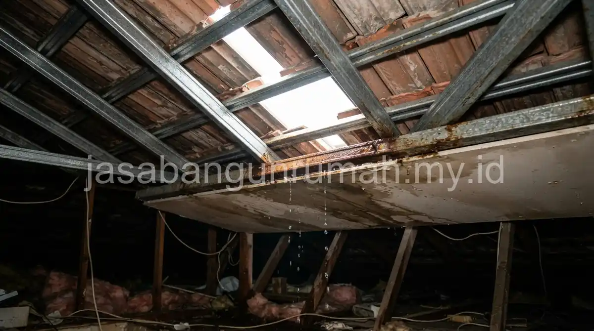

Daftar Isi
Genteng metal pasir menjadi pilihan pengganti genteng tanah liat lama karena bobotnya jauh lebih ringan, sehingga lebih sesuai dipasang di atas rangka baja ringan yang menahan beban lebih kecil dibandingkan rangka kayu konvensional.
Mengapa Genteng Metal Pasir Menjadi Pilihan Pengganti Genteng Tanah Liat Lama?
Genteng tanah liat memiliki bobot cukup berat sehingga membutuhkan rangka kayu yang kokoh, sedangkan genteng metal pasir jauh lebih ringan dan cocok dipasangkan dengan rangka baja ringan yang lebih tahan rayap dan pelapukan.
Selain bobot yang lebih ringan, genteng metal pasir juga memiliki lapisan pasir pelindung yang membantu meredam suara hujan dan memberi tampilan yang lebih rapi dibandingkan genteng metal polos tanpa lapisan.
Penggantian ke material ini juga membantu mengurangi beban pada struktur atap lama yang mungkin sudah mulai melemah akibat usia bangunan, sehingga risiko kerusakan struktural lebih lanjut dapat diminimalkan.
Bagaimana Proses Penggantian Genteng Dilakukan di Lapangan?
Proses dimulai dari pembongkaran genteng lama secara hati-hati, pemeriksaan kondisi rangka atap untuk menentukan apakah rangka lama masih layak dipertahankan atau perlu diganti sebagian, kemudian pemasangan rangka baja ringan baru apabila diperlukan sebelum genteng metal pasir dipasang.

Tim akan memastikan kemiringan atap tetap sesuai standar agar aliran air hujan lancar menuju talang, serta memeriksa sambungan pada bagian nok dan jurai agar tidak menjadi titik kebocoran baru setelah pemasangan selesai.
Pekerjaan ini biasanya dapat diselesaikan dalam beberapa hari tergantung luas atap dan tingkat kerusakan rangka lama, sehingga aktivitas penghuni rumah tidak terganggu terlalu lama.
Apakah Tersedia Garansi Pascapengerjaan Perbaikan Atap?
Garansi pascapengerjaan umumnya diberikan untuk mengantisipasi kebocoran yang mungkin baru terlihat setelah melewati beberapa kali hujan deras pascapenggantian genteng dan rangka atap.
Ketentuan garansi sebaiknya dicantumkan secara tertulis, termasuk jangka waktu dan prosedur klaim apabila ditemukan kebocoran pada titik yang sama setelah pekerjaan selesai.
Bagi warga Bekasi Timur yang mengalami atap bocor atau dak rembes, dapat menghubungi kontraktor renovasi profesional kami untuk survey lokasi dan estimasi biaya penggantian atap secara gratis.